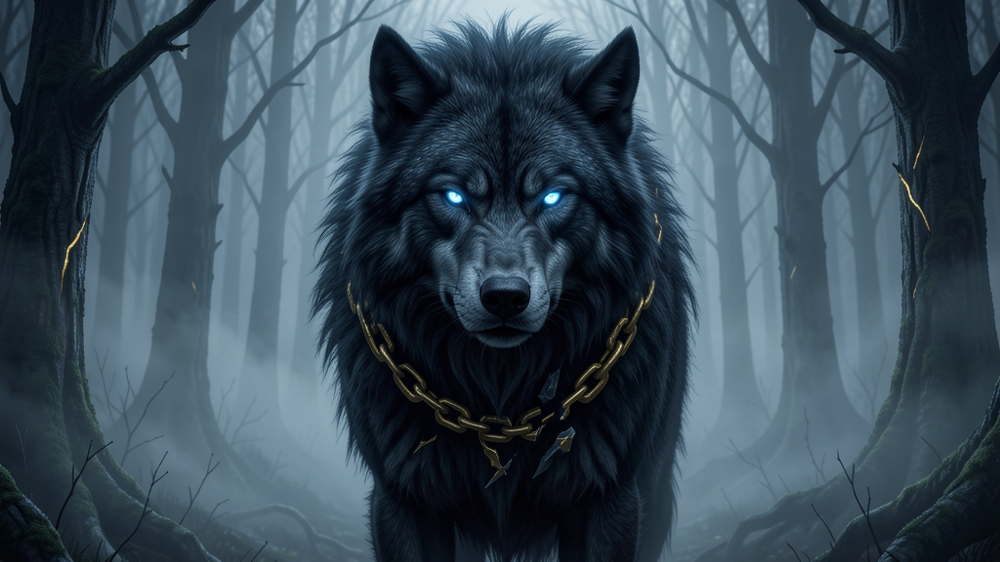

Compliance and guard-rail automation — bind the runaway process before it bites.

The Fenris Wolf — Fenrir (Old Norse Fenrir, also Fenrisúlfr, "Fenrir's wolf") is the firstborn child of Loki and the jötunn Angrboða, brother of Jörmungandr and Hel (Gylfaginning 34). The Æsir raised him in Asgard but, foreseeing the harm the wolf would do, resolved to bind him. Twice they tried with great iron chains — Leyding and Dromi — and twice Fenrir shattered them. Only the dwarf-made fetter Gleipnir held him: a silken, seemingly harmless bond forged from six impossible things — the sound of a cat's footfall, a woman's beard, the roots of a mountain, a bear's sinews, the breath of a fish, and the spittle of a bird.
The corrected, full saga: the gods needed Týr to place his hand in Fenrir's mouth as a pledge of good faith; when the wolf found he could not break Gleipnir, he bit off Týr's hand. The Æsir bound him, thrust a sword through his jaws, and left him until Ragnarök, when he breaks free and swallows Óðinn on the plain of Vígríðr (Gylfaginning 34, 51; Völuspá 53). Fenrir is bound by the unbreakable-made-frail, and the lesson for compliance is that the strongest guard is the one the runaway process does not see coming.
Leyding and Dromi were iron and obvious, and Fenrir broke them both. Gleipnir looked like a silken ribbon — and it held, because the wolf did not respect what he could not see as a threat. The agency lesson for compliance is exact: the guard-rails users try to circumvent are the heavy, visible ones. The ones that actually hold are the quiet defaults — the permission that is off until granted, the step that requires sign-off, the automated policy that runs before a process can run wild.
Fenrir's fix is compliance automation built like Gleipnir: lightweight, invisible-until-tested guard-rails — approval gates, policy checks, and kill-switches — that bind runaway processes without slowing the work that should flow.
Compliance and guard-rail automation — invisible-until-tested approval gates and policy checks. Make.com + n8n ready.
Buy on the Marketplace → View all products